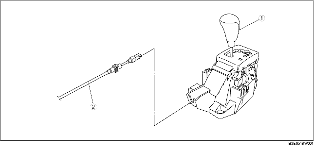

.
|
1
|
Levier de sélecteur
(voir la section INSPECTION DE LEVIER SÉLECTEUR.)
(voir la section INSPECTION DE COMPOSANT DE LEVIER SÉLECTEUR.)
(voir la section DEPOSE/REPOSE DE COMPOSANT DE LEVIER DE SELECTEUR.)
(voir la section DEMONTAGE/REMONTAGE DE LEVIER DE SELECTEUR.)
|
|
2
|
Câble de sélecteur
(voir la section REGLAGE DE CABLE DE SELECTEUR.)
|